<div class="section" *ngIf="article">
    <div class="like-area">
      
      <button class="btn1" (click)="addNewLike()">
        <div *ngIf="isLiked == false;else noLiked">
            
        </div>
        <ng-template #noLiked>
            <div>
              

            </div>
        </ng-template>
      </button>
      <div><p>{{likes.length}}</p></div>
    </div>
    
  </div>
